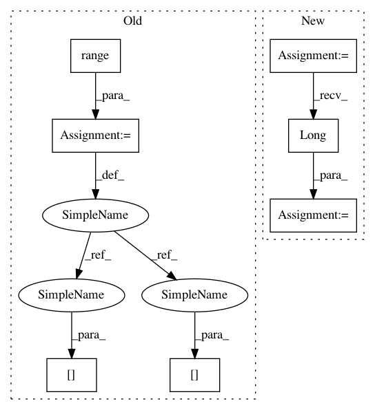

017517d06144919555f9d991f13639ee4cc4babb,onmt/modules/CopyGenerator.py,CopyGeneratorLossCompute,compute_loss,#CopyGeneratorLossCompute#Any#Any#Any#Any#Any#,105
Before Change
// Correct target is copy when only option.
// TODO: replace for loop with masking or boolean indexing
target_data = target.data.clone()
for i in range(target_data.size(0)):
if target_data[i] == 0 and align.data[i] != 0:
target_data[i] = align.data[i] + len(self.tgt_vocab)
// Coverage loss term.
loss_data = loss.data.clone()
stats = self.stats(loss_data, scores_data, target_data)
After Change
// tgt[i] = align[i] + len(tgt_vocab)
// for i such that tgt[i] == 0 and align[i] != 0
target_data = target.data.clone()
correct_mask = target_data.eq(0) * align.data.ne(0)
correct_copy = (align.data + len(self.tgt_vocab)) * correct_mask.long()
target_data = target_data + correct_copy
// Coverage loss term.
loss_data = loss.data.clone()
In pattern: SUPERPATTERN
Frequency: 3
Non-data size: 7
Instances
Project Name: OpenNMT/OpenNMT-py
Commit Name: 017517d06144919555f9d991f13639ee4cc4babb
Time: 2017-11-17
Author: pltrdy@gmail.com
File Name: onmt/modules/CopyGenerator.py
Class Name: CopyGeneratorLossCompute
Method Name: compute_loss
Project Name: OpenNMT/OpenNMT-py
Commit Name: 017517d06144919555f9d991f13639ee4cc4babb
Time: 2017-11-17
Author: pltrdy@gmail.com
File Name: onmt/modules/CopyGenerator.py
Class Name: CopyGeneratorLossCompute
Method Name: compute_loss
Project Name: ncullen93/torchsample
Commit Name: 6ddf825a4aa1bcf3a35bba8d36bc433fe5ebaa39
Time: 2017-04-24
Author: ncullen@Nicks-MacBook-Pro.local
File Name: torchsample/utils.py
Class Name:
Method Name: th_nearest_interp_3d
Project Name: OpenNMT/OpenNMT-py
Commit Name: a5763a81a2180e1d99f678d31f0fb7b9c26f4dff
Time: 2017-11-17
Author: pltrdy@gmail.com
File Name: onmt/modules/CopyGenerator.py
Class Name: CopyGeneratorLossCompute
Method Name: compute_loss